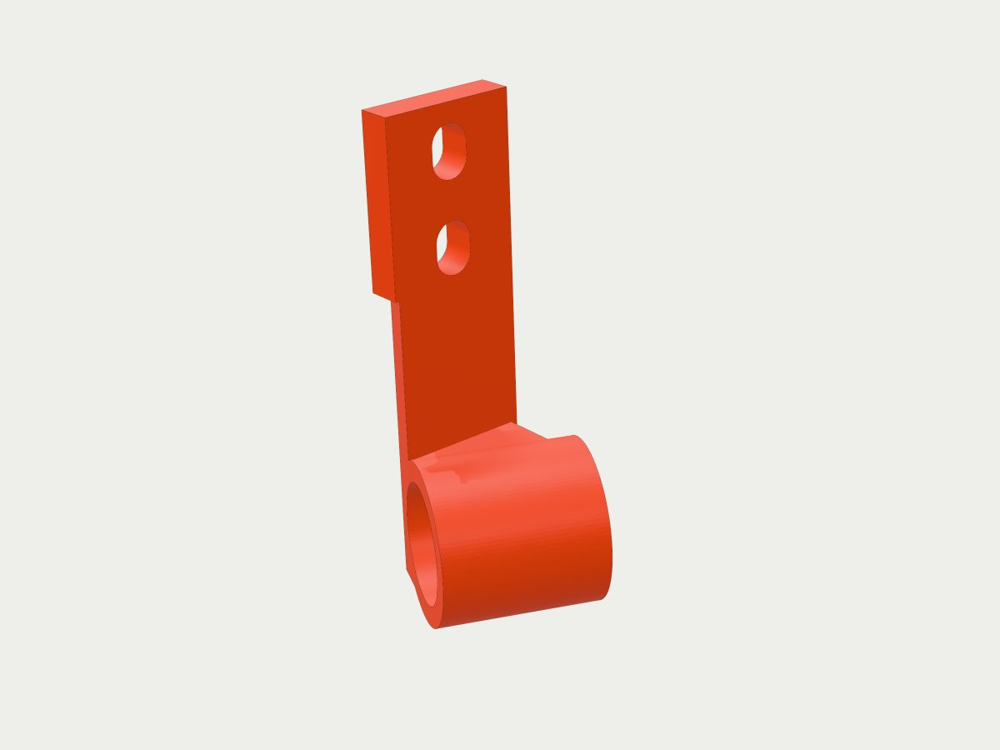
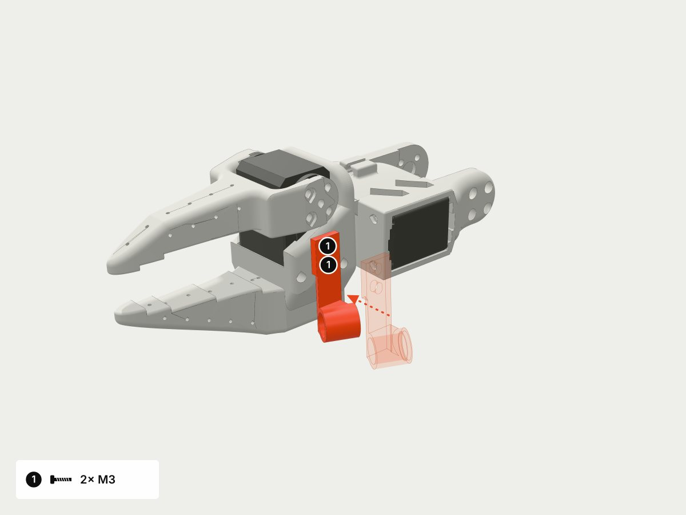
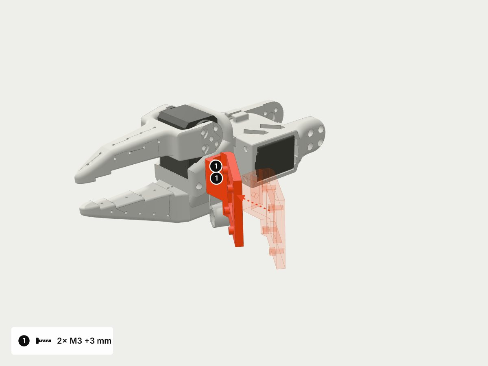
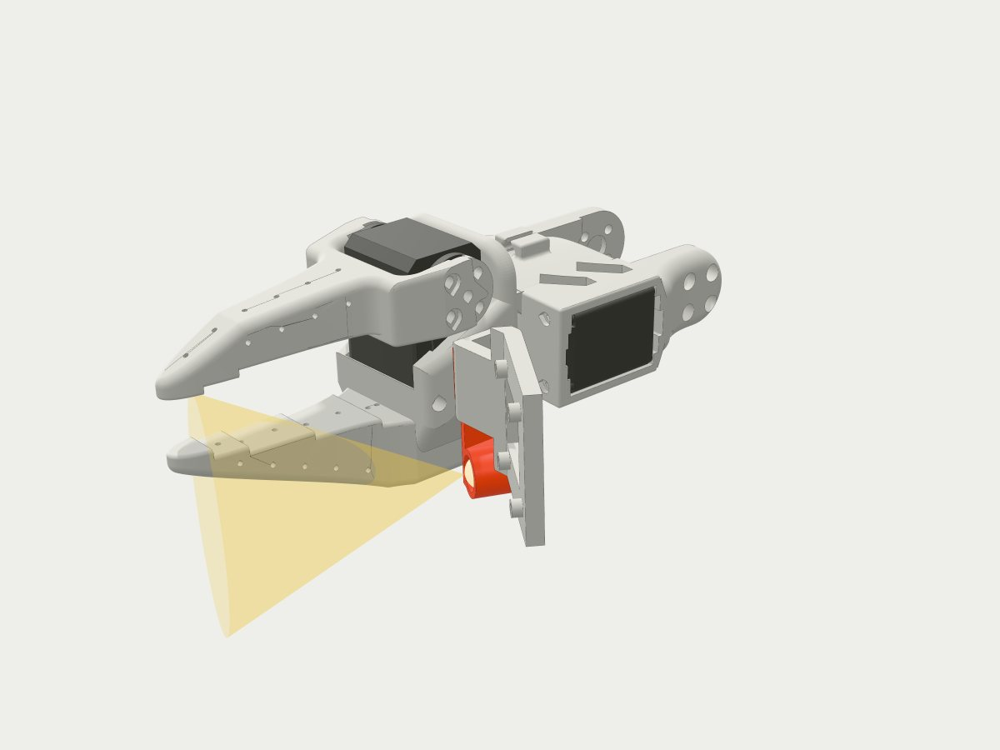
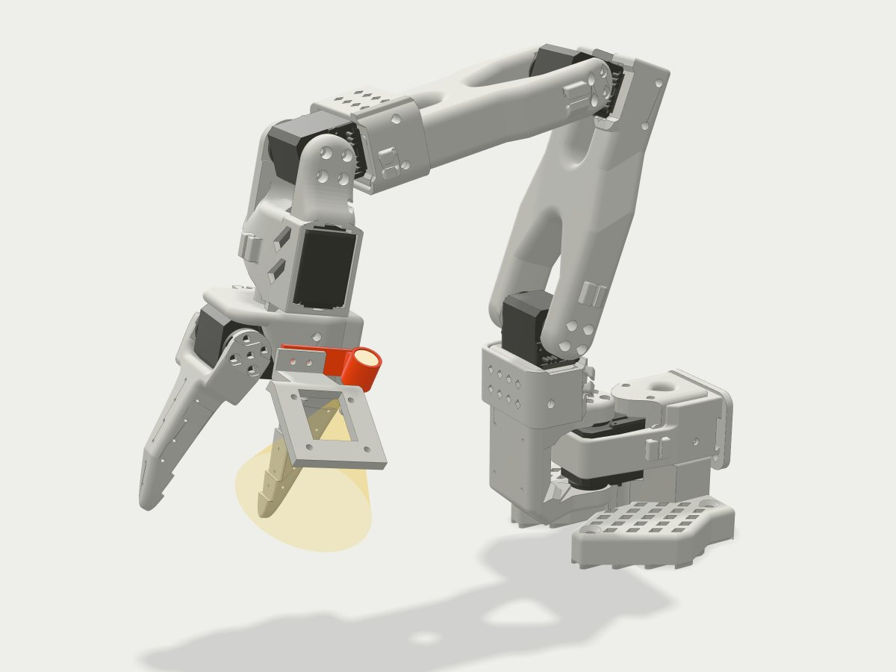

Extension: flashlight for the SO-101
A small printed holder for a white 10 mm LED on the fixed jaw of the gripper, next to the wrist camera. It lights the jaw tips and runs from USB 5 V through one resistor.
Community design – verified in simulation only. The part was designed and checked by our automated CAD workshop (forge) on the MuJoCo Menagerie model of the arm. Nobody has printed or fitted it yet. Hole sizes are measured on simplified simulation meshes: verify on a print.
What you need
- Printed holder (PLA, ≈2.38 g, 42 × 18 × 18 mm), printed plate-down, no supports.
- White 10 mm LED: TRU COMPONENTS 1577414, white LED 10 mm, 3250 mcd, 50°, 20 mA (source checked 2026-10-30; the page showed no price).
- Resistor 120 Ω, ≥ 0.25 W (example).
- An old USB-A cable to cut (≈1 m), heat-shrink tubing.
- 2× M3 screw, 3 mm longer than the screws in the jaw holes.

Fitting it to the gripper
- Undo the two M3 screws of the wrist camera mount on the fixed jaw and take the camera off. Without a camera, just remove the screws.
- Put the holder plate on the jaw face (holes at 8.0 mm pitch), sleeve on the side away from the moving jaw.
- Put the camera mount back on top and tighten everything with the longer M3 screws (+3 mm). The camera moves 3 mm away from the jaw.
- Push the LED into the sleeve from the back (bore 10.25 mm, the LED collar sits in the 11.4 mm seat). The longer leg is the anode (+).


Wiring: USB 5 V and a resistor
Power the LED from a computer USB port or a USB charger, not from the servo supply. The arm runs on 12 V or 7.4 V and mixing supplies up is the most common mistake.
- VBUS (red wire) → 120 Ω resistor → LED anode (longer leg); cathode (shorter leg, flat side) → GND (black wire).
- Current: 14.2 mA typical, 18.8 mA worst case (5.25 V, Vf 3.0 V), at least 9.6 mA. The resistor dissipates at most 42.2 mW.
- A power bank only with a low-current mode: most switch off below ≈50–100 mA.
- Alternative: a small buck module to 5 V from the servo supply, with the same resistor, a 250 mA fuse and 5.0 V measured with a multimeter before the LED goes on.
- Never: mains voltage, LiPo cells, the LED straight on the servo supply without a resistor.
Run the cable along the forearm servo cables and leave a 60–80 mm loop at the wrist: wrist roll turns ±157°.

What we checked in simulation
- Printing: thinnest wall 1.22 mm (minimum 1.2 mm), the model is closed, the LED bore prints horizontally without supports.
- Mass: part ≈2.38 g; with the LED, resistor and some cable ≈5.38 g extra on the gripper.
- Servos: static wrist-flex torque rises by 0.0046 N·m (3.5 %) to 0.135 N·m, 8.3 % of a 7.4 V servo's torque. Shoulder: +2.0 %. Negligible.
- Collisions: Across 8644 poses the holder touches the base or the driver-board plate in 8 fully folded poses, all of them poses where the arm's own jaw is already within 2.48 mm of the base. Keep the folded rest pose a few degrees open or check it on the real arm. Clearance to the camera mount and the jaw is ≥ 0.3 mm away from the seat faces.

Verify on a print
- hole pitch 8.0 ± 0.6 mm and Ø3.2 mm (measured on decimated sim meshes)
- LED fit: bore 10.25 mm, collar seat 11.4 mm
- screw length with the camera mount sandwiched (+3 mm)
- thinnest wall 1.22 mm at the LED collar seat
- cable service loop over the full wrist roll
- clearance to the base in fully folded poses
Renders and checks use the SO-101 model (The Robot Studio, SO-ARM100, via MuJoCo Menagerie, Apache 2.0 licence). Screws are schematic glyphs. Part sources (STEP, STL, build123d) are in the repository under backend/forge/examples/so101-flashlight/.